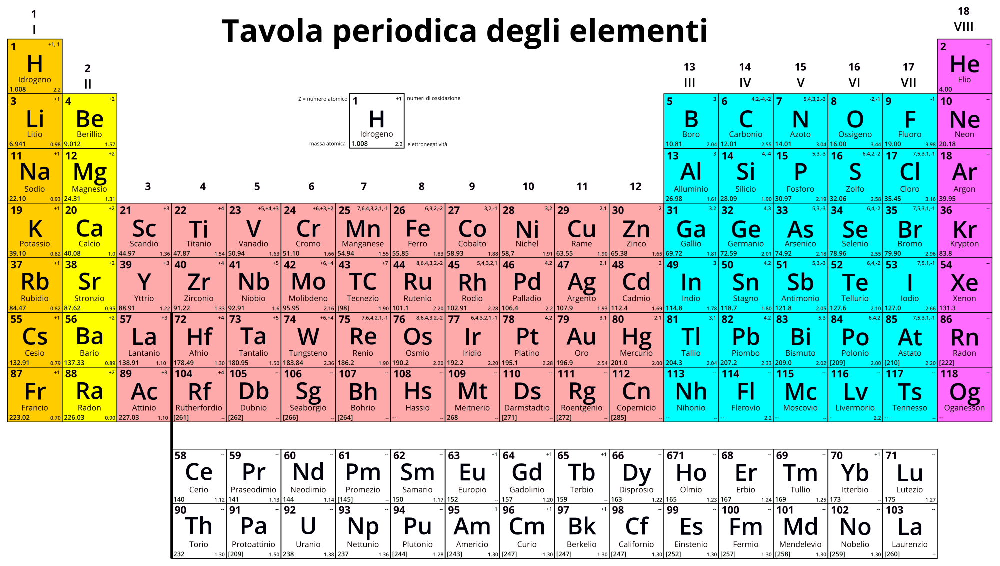

<<<<<<< Updated upstream

La tavola periodica degli elementi (o semplicemente tavola periodica o tavola di Mendeleev) è lo schema con cui sono ordinati gli elementi chimici sulla base del loro numero atomico Z e del numero di elettroni presenti negli orbitali atomici s, p, d, f.
È la prima e più utilizzata versione di tavola periodica, ideata nel 1869 dal chimico russo Dmitrij Ivanovič Mendeleev[1] e, in modo indipendente, dal chimico tedesco Julius Lothar Meyer[2]; contava in principio numerosi spazi vuoti per gli elementi previsti dalla teoria, alcuni dei quali sarebbero stati scoperti solo nella seconda metà del Novecento.
=======
>>>>>>> Stashed changes